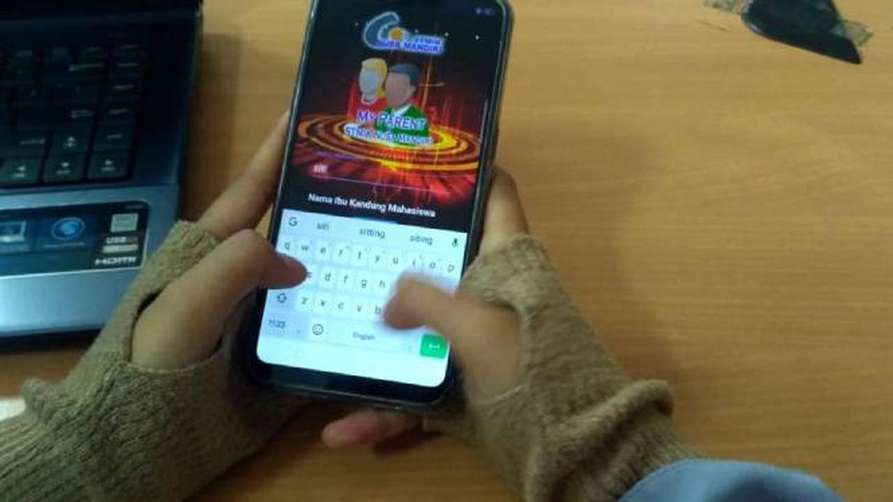

Tim Program Kreativitas Mahasiswa (PKM) STMIK Nusa Mandiri Jakarta berhasil lolos proposal PKM pendanaan tahun 2018

Proposal penelitian mahasiswa STMIK Nusa Mandiri Jakarta menjadi salah satu dari 3.918 proposal yang lolos dalam seleksi pendanaan Program Kreativitas Mahasiswa (PKM) 2017

Wisuda STMIK Nusa Mandiri Ke-27 Dihadiri Rektor UGM

Orangtua Kini Bisa Pantau Anak Kuliah via Aplikasi